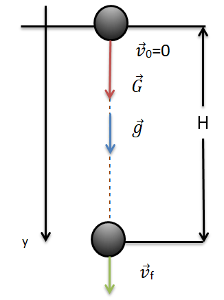

Căderea liberă
Cel mai la îndemână exemplu de mişcare cu acceleraţie constantă este cel al unui corp care cade pe Pământ de la o înălţime
oarecare h, suficient de mică astfel încât acceleraţia gravitaţională (a=g=const.) să ramână constantă în
timpul căderii. Dacă nu se ţine cont de rezistenţa aerului şi nici de variaţia lui g cu h, avem o mişcare
idealizată care poartă numele de „cădere liberă”.
Un corp lăsat să cadă liber (v
0 = 0) de la înălţimea H, va executa o mişcare accelerată cu acceleraţia a=g, sub acţiunea propriei
greutăţi
